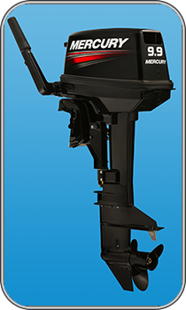

9.9 MH Light

| Технические характеристики | |
|---|---|
| Максимальная мощность, л.с/кВт: | 9.9(7.2) |
| Максимальные обороты: | 5000-5600 |
| Число цилиндров: | 2 |
| Рабочий объём, см.куб: | 169 |
| Диаметр Х ход поршня, мм: | 50 х 43 |
| Охлаждение: | Забортной водой, есть термостат |
| Зажигание: | CDI с электронным опережением зажигания |
| Запуск: | Ручной |
| Передаточное число редуктора: | 2.08:1 |
| Переключение передач: | Передний ход - Нейтральное положение - Задний ход (F-N-R) |
| Рулевое управление: | Румпельное |
| Ток генератора: | Не в компл. 4А для освещения / 2А для зарядки |
| Мощность генератора: | Не в компл. 50 Вт для освещения / 25 Вт для зарядки |
| Кол-во позиций угла наклона | 6 |
| Выхлопная система | Через гребной винт |
| Система смазки | С предварительным смешиванием |
| Рекомендуемое масло | Масло марки Premium для 2-тактн. ПЛМ Mercury |
| Диапазон трима на мелководье | 20 градусов |
| Выносной топливный бак, л. | 12.5 |
| Рекомендуемая высота транца, мм. | 381 |
| Сухой вес, кг | 26 |
| Гарантия | 2 года |
| Гребной винт | В комплекте |